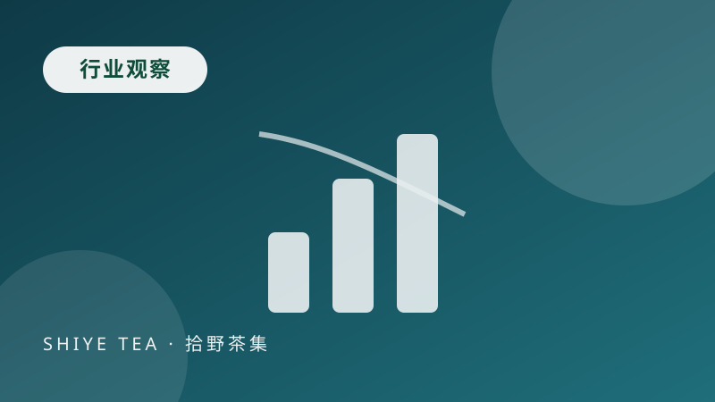
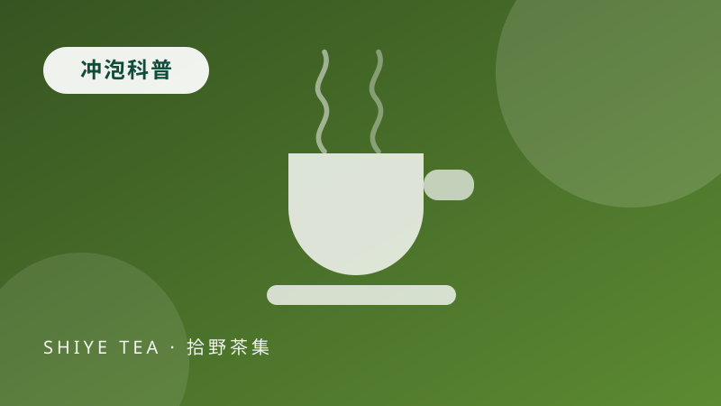
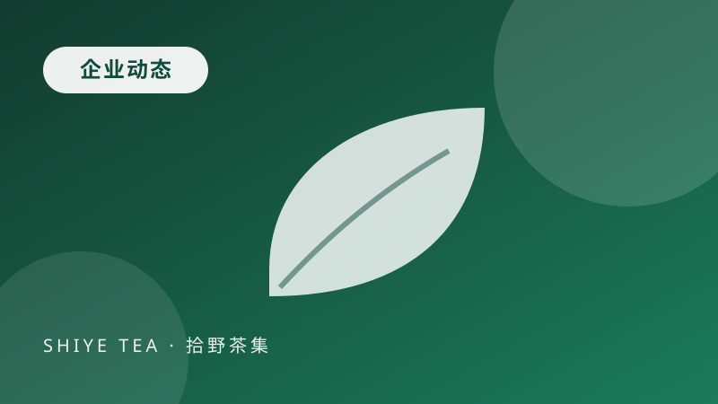
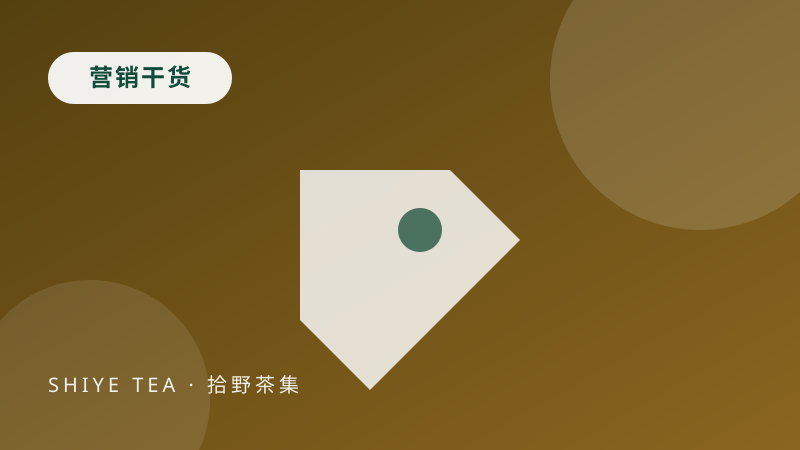

2026 云南春茶减产与价格走势：山头茶为什么没跟风涨价
今年云南春茶季降水偏少，部分产区鲜叶减产 10%-15%，名山头报价上浮明显。但我们把主力口粮茶的价格按住了，原因有三点：年度直采协议、产品结构不做单品依赖、以及把预算放在原料而非点击成本上。
阅读全文这里发布拾野茶集的企业动态、云南茶行业观察、原叶茶冲泡参数与茶叶电商运营方法。内容全部由团队原创撰写，每周更新 1-2 篇，既服务已经买过茶的顾客，也方便正在做功课的新朋友。

今年云南春茶季降水偏少，部分产区鲜叶减产 10%-15%，名山头报价上浮明显。但我们把主力口粮茶的价格按住了，原因有三点：年度直采协议、产品结构不做单品依赖、以及把预算放在原料而非点击成本上。
阅读全文
同样写着“云南红茶”，价格能从每斤几十元到上千元。差别不只在原料等级，更在发酵与干燥方式。这篇把晒红、传统滇红与金针三类产品的工艺差异、风味表现与适合的喝法讲清楚。
阅读全文
继临沧、勐库、凤庆之后，普洱景谷的一座 1200 亩大叶种茶园正式加入拾野茶集的年度直采名单，将为主推的 3 秒冷萃冻干茶粉与陈皮白茶小罐提供原料。
阅读全文
茶叶是典型的高复购品类，但多数店铺只盯着首单转化。这篇拆解拾野茶集在会员订阅、冲泡指导、口味反馈闭环与老客专属活动上的具体做法，包含可以直接照搬的执行细节。
阅读全文经过三个月的产品打磨与供应链准备，拾野茶集官方网站正式上线，包含首页、关于我们、产品中心、主推产品、营销活动、联系我们与新闻动态七个页面，同步开启开业季活动。
阅读全文近两年线上茶叶消费出现一个明显变化：低端茶包增速放缓，能看见叶底、能查到产地的原叶茶与便捷形态（冻干茶粉、三角袋泡）增长更快。这篇分析背后的三个消费动因。
阅读全文发布于 2026-09-21 · 拾野茶集市场推广组
2026 年春茶季，云南主产区降水较往年偏少，临沧、普洱部分山区在三月中下旬出现了明显的干旱窗口。鲜叶发芽推迟约一周，采摘期被压缩，最终导致部分产区减产 10%-15%。对茶山来说，这是一次不太轻松的年份；对消费者来说，最直观的感受是“名山头报价又涨了”。
涨价最初出现在鲜叶端。冰岛、昔归等知名小产区的古树鲜叶收购价上浮 15%-25%，紧跟着是初制所的毛茶报价。按常规逻辑，零售端应该同步上调。但我们在 9 月开业时把口粮茶价格定在了 79-268 元区间，与去年同类产品的市场均价基本持平，原因有三个。
拾野茶集在春茶季前就与 12 座茶山签订年度采购协议，约定基准量与浮动区间。当鲜叶行情波动时，采购价在协议区间内调整，不会完全跟随短期行情。这让我们的成本曲线比现货采购更平缓，也避免了旺季抢货式的加价。
如果一家店铺 80% 的销售额都来自同一款名山头茶，减产年份就只能涨价。我们的产品结构分散在山头原叶、便捷冲泡与会员礼盒三条线上：冰岛五寨这类高价产品承担品牌与送礼需求，而滇红金针、玲珑茶包、冻干茶粉则依托勐库、凤庆、景谷等产量稳定的产区，价格弹性更大。
很多同行的成本结构里，流量费用占比不低。我们更依赖老客复购与私域推荐，41% 的复购率让获客成本可以被摊薄，也就不需要通过拉高售价来覆盖投放。这是价格能稳住的关键前提。
减产年份真正被考验的不是定价能力，而是供应链准备。临时找货的商家只能被动接受价格，提前锁量的商家才有选择权。
当然，涨价压力并非不存在。如果干旱持续，2027 年春茶季的鲜叶成本还会上升。我们的应对办法是继续扩充合作的产区清单，把普洱、保山等产量更稳定的区域纳入直采范围，同时把会员订阅的比例提高，用可预测的需求换取更稳定的采购价。
对消费者来说，判断一次涨价是否合理，可以看三件事：原料是否真的减产、产品是否标注了具体产区与批次、价格上涨是否伴随品质提升。如果三点都说不清，那多半是借着行情做营销，而不是成本推动。想了解当前各产区的批次与价格情况，可以联系茶顾问索取当季采购简报。
发布于 2026-09-17 · 拾野茶集运营组
云南红茶的名称很多，晒红、滇红、金针、古树红、晒青红……对刚接触的人来说，这些词看起来像营销话术。实际上它们讲的是两件事：原料等级（金针指芽头类）与发酵干燥方式（晒红靠日光晒制，传统滇红靠烘焙提香）。
如果怕苦涩、习惯用保温杯闷泡，选晒红更稳；如果喜欢香气明显、出汤快，选传统滇红或金针。三者冲泡水温都建议在 85-90℃，投茶量按 1:50 到 1:60 控制，例如 300ml 杯放 5g 左右。坐杯时间从 20 秒起，第二泡起逐次延长 10 秒。
| 对比项 | 晒红 | 传统滇红 | 金针 |
|---|---|---|---|
| 干燥方式 | 日光晒制 | 烘焙提香 | 烘焙，轻发酵 |
| 香气特征 | 蜜甜、果干 | 焦糖、蜜香高扬 | 细腻毫香 |
| 耐泡度 | 高（7-9 泡） | 中（5-7 泡） | 中（5-7 泡） |
| 适合人群 | 怕涩、保温杯用户 | 追求香气 | 送礼、讲究芽头 |
我们的勐库大雪山古树晒红属于第一类，凤庆滇红金针则在原料等级与甜顺口感之间做了平衡，适合作为第一罐日常红茶。
发布于 2026-09-08 · 拾野茶集运营组
同一款茶，用保温杯闷泡两小时和用马克杯快出汤，味道可以差很多。这篇给出一张可以贴在工位上的参数卡，覆盖三种最常见的办公室器具。
投茶量 4-5g，水温 85-90℃。第一杯 1 分钟内喝完或倒出，避免长时间闷泡导致苦涩；随后每加一次水延后出汤时间，可续水 3-4 次。红茶与陈皮白茶在这类器具里表现最稳。
投茶量 3g，水温 85℃，坐杯 30 秒后饮用。没有滤网时建议使用三角原叶茶包，出汤后把茶包取出，可以明显降低苦涩。玲珑原叶茶包就是为这种场景设计的。
想喝冷泡茶有两种路径：一是提前 4-8 小时用常温水冷泡原叶茶；二是直接用冻干茶粉，冷水 3 秒即溶，适合临时起意。冷泡原叶茶建议茶水比 1:100，冷藏过夜风味最佳。
另外两个容易被忽略的细节：水质会明显影响口感，矿泉水优于纯净水；办公室水温不稳定时，可以先用热水冲开再兑冷水降温，比反复加热的水更好喝。
发布于 2026-09-11 · 拾野茶集市场推广组
茶叶是典型的高复购品类，但多数店铺把 90% 的精力花在首单转化上，第二单就断掉了。我们目前的复购率是 41%，做法并不复杂，难点在执行的一致性。
需要提醒的是，复购率是结果而不是手段。产品不过硬时，任何会员体系都留不住人。先把第一批货的品质与售后做稳，再谈运营动作。
发布于 2026-09-15 · 拾野茶集企业动态
继临沧、勐库、凤庆之后，普洱市景谷县一座约 1200 亩的大叶种茶园正式加入拾野茶集的年度直采名单，成为第十二座合作茶山。该茶园海拔 1600-1850 米，以群体种大叶种为主，今年春茶头采日期为 4 月 12 日。
这片茶园的原料将主要用于 3 秒冷萃冻干茶粉与陈皮白茶小罐两条产品线：大叶种原叶的汤感厚实，经低温萃取后茶汤浓度稳定，适合做成即溶形态；同时它也为后续推出新的冷泡产品留出了原料空间。
签约后，茶园将按我们的批次管理要求进行鲜叶分堆与进场登记，检测报告编号会同步到产品的溯源信息卡。茶山实地照片与初制工艺记录将在本月内更新到官网与溯源页面。
发布于 2026-09-05 · 拾野茶集市场推广组
茶叶的搜索需求非常分散：有人搜“滇红金针”这类品类词，有人搜“办公室喝什么茶”这类场景词，也有人搜“古树茶是不是智商税”这类问题词。做 SEO 的第一步不是堆关键词，而是把关键词分类，再决定每一类放在什么页面。
页面之间要建立内链：文章里自然链接到产品页，产品页反链到相关的冲泡指南与活动页。内链既帮助用户继续浏览，也让搜索引擎理解站点结构。最后，标题与描述要写清具体信息（价格、规格、门槛），点击率比关键词密度更影响实际流量。
发布于 2026-09-23 · 拾野茶集企业动态
拾野茶集官方网站今日上线，包含首页、关于我们、产品中心、主推产品、营销活动、联系我们与新闻动态共七个页面，同步开启开业季的两档活动：新客立减 20 元与茶山会员季卡直降 60 元。
网站按照营销导向的思路搭建：首页承担获客与引流，产品页完成选品与对比，产品详情页解决决策疑虑，活动页制造转化理由，联系页承接咨询留言，新闻页负责专业度与搜索收录。所有页面在电脑端与手机端均可正常浏览，导航与按钮均可正常跳转。
上线首月我们会重点观察三个数据：留言表单的提交量、产品详情页的平均停留时长、以及新客券的实际使用率。根据反馈调整页面顺序与文案重点，后续版本将补充用户评价墙与批次查询入口。
发布于 2026-09-02 · 拾野茶集市场推广组
近两年线上茶叶消费出现一个明显变化：低端茶包增速放缓，而能看见叶底、能查到产地的原叶茶与便捷形态（冻干茶粉、三角袋泡）增长更快。这个变化背后是三个动因。
其一是信息透明带来的决策信心。溯源、批次与检测报告让消费者敢于尝试陌生的产区与品牌，而不必依赖熟人或线下茶店推荐。其二是场景碎片化：办公室里没有功夫茶具，通勤与健身时更需要即溶形态，产品形态必须跟着场景走。其三是价格结构回归理性，愿意为原料付费、但不愿为过度包装与流量溢价买单的消费者越来越多。
对我们来说，这意味着产品策略要继续沿着“原叶品质 + 便捷形态 + 透明信息”三条线走，而不是简单地在包装上做文章。